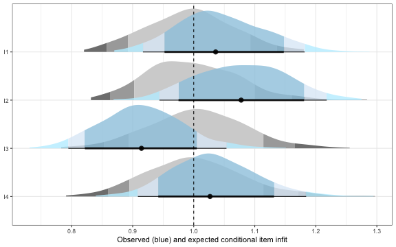
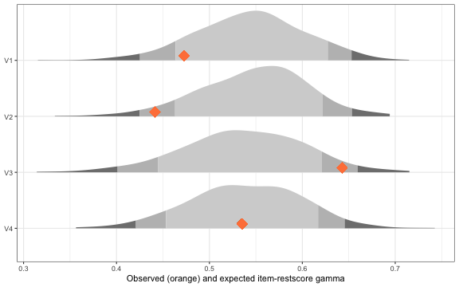
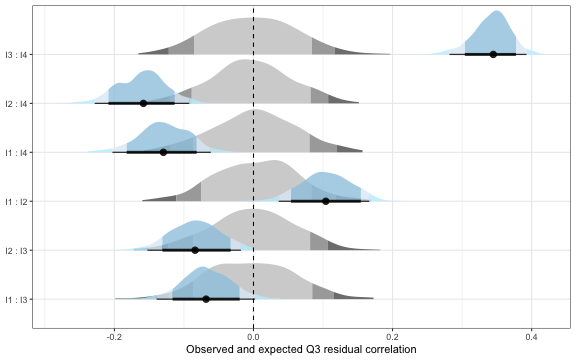
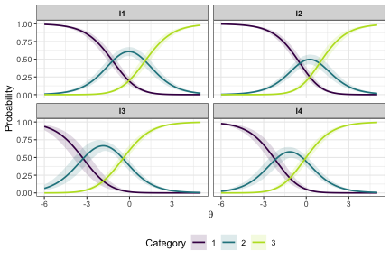

Partial Credit Model Analysis with easyRaschBayes
Source:vignettes/pcm-rasch-analysis.Rmd
pcm-rasch-analysis.RmdOverview
This vignette demonstrates a Partial Credit Model (PCM) Rasch
analysis workflow using easyRaschBayes. The analysis uses
the eRm::pcmdat2 dataset, a small polytomous item response
data set included in the eRm package.
All functions in this package work with a Bayesian brms
model object fitted with the acat (adjacent categories)
family, which parameterises the PCM. Dichotomous Rasch models can also
be fit using brms and analyzed with the functions in this
package. A code example is available here.
There is brief text explaining the output and interpretation in this
vignette. For a more extensive treatment of the Rasch analysis steps,
please see the easyRasch
vignette.
Data Preparation
library(easyRaschBayes)
library(brms)
library(dplyr)
library(tidyr)
library(tibble)
library(ggplot2)eRm::pcmdat2 is in wide format with item responses coded
0, 1, 2, …. The brms acat family expects
response categories starting at 1, so we add 1 to every
response before reshaping to long format.
df_pcm <- eRm::pcmdat2 %>%
mutate(across(everything(), ~ .x + 1)) %>%
rownames_to_column("id") %>%
pivot_longer(!id, names_to = "item", values_to = "response")
head(df_pcm)
#> # A tibble: 6 × 3
#> id item response
#> <chr> <chr> <dbl>
#> 1 1 I1 2
#> 2 1 I2 2
#> 3 1 I3 2
#> 4 1 I4 2
#> 5 2 I1 1
#> 6 2 I2 1Fitting the PCM
The model is fitted once and saved to disk. The code chunk below
shows the fitting call (not evaluated during R CMD check).
A pre-fitted model stored at fits/fit_pcm.rds is loaded
instead.
prior_pcm <- prior("normal(0, 5)", class = "Intercept") +
prior("normal(0, 3)", class = "sd", group = "id")
fit_pcm <- brm(
response | thres(gr = item) ~ 1 + (1 | id),
data = df_pcm,
family = acat,
prior = prior_pcm,
chains = 4,
cores = 4,
iter = 2000
)
saveRDS(fit_pcm, "fits/fit_pcm.rds")
fit_pcm <- readRDS("fits/fit_pcm.rds")Item Fit: Infit and Outfit Statistics
infit_statistic() computes posterior predictive infit
and outfit statistics for each item. Values near 1.0 indicate good fit;
values substantially above 1 suggest underfit (unexpected responses),
values below 1 suggest overfit (too predictable).
The ndraws_use argument limits the number of posterior
draws used, which speeds up computation during exploration. For final
reporting, use all draws (set ndraws_use = NULL or omit
it).
fit_stats <- infit_statistic(fit_pcm, ndraws_use = 500)
# Post-process infit
infit_results <- infit_post(fit_stats)
infit_results$summary
#> # A tibble: 4 × 4
#> item infit_obs infit_rep infit_ppp
#> <chr> <dbl> <dbl> <dbl>
#> 1 I1 1.04 0.994 0.248
#> 2 I2 1.08 0.998 0.142
#> 3 I3 0.916 1.00 0.922
#> 4 I4 1.03 1.00 0.336
infit_results$hdi
#> # A tibble: 4 × 3
#> item underfit overfit
#> <chr> <dbl> <dbl>
#> 1 I1 0.226 0.012
#> 2 I2 0.446 0.006
#> 3 I3 0.002 0.426
#> 4 I4 0.156 0.016
infit_results$plot
plot of chunk infit
infit_obs indicates the observed conditional infit,
which can be compared to infit_rep, which is akin to the
model expected value. Posterior predictive p-values (*_ppp)
close to 0.5 indicate that the observed statistic falls near the centre
of the posterior predictive distribution, implying good fit. Values near
0 or 1 warrant further investigation.
Item–Rest Score Association
item_restscore_statistic() computes Goodman-Kruskal’s
gamma between each item’s observed responses and the rest score (total
score minus the focal item). In a well-fitting Rasch model, gamma should
be positive and moderate; very high values may indicate redundancy, very
low or negative values suggest the item does not relate well to the
latent trait.
rest_stats <- item_restscore_statistic(fit_pcm, ndraws_use = 500)
rest_results <- item_restscore_post(rest_stats)
rest_results$summary
#> # A tibble: 4 × 5
#> item gamma_obs gamma_rep gamma_diff ppp
#> <chr> <dbl> <dbl> <dbl> <dbl>
#> 1 I1 0.473 0.544 -0.071 0.106
#> 2 I2 0.441 0.548 -0.106 0.044
#> 3 I3 0.643 0.537 0.106 0.96
#> 4 I4 0.535 0.539 -0.004 0.476
rest_results$plot
plot of chunk restscore
Dimensionality: Residual PCA
plot_residual_pca() performs a principal components
analysis on the person-item residuals and plots the standardized
loadings on the first residual contrast factor together with item
locations and the uncertainty of both.
pca <- plot_residual_pca(fit_pcm, ndraws_use = 500)
pca$plot
#> `height` was translated to `width`.
plot of chunk pca-plot
Items with positive loadings cluster on one end, negative loadings on the other. If the observed largest eigenvalue is smaller than the replicated, unidimensionality is supported. The ppp should not be close to 1.
Local Dependence: Q3 Residual Correlations
q3_statistic() computes Yen’s Q3 statistic — the
correlation between person-item residuals for every item pair. After
conditioning on the latent trait, residuals should be uncorrelated;
elevated Q3 values indicate local dependence (LD). Our primary metric
here is the ppp, that should not be close to 1. The output is filtered
on ppp values above 0.95.
q3_stats <- q3_statistic(fit_pcm, ndraws_use = 500)
q3_results <- q3_post(q3_stats)
q3_results$summary
#> # A tibble: 6 × 7
#> item_pair item_1 item_2 q3_obs q3_rep q3_diff q3_ppp
#> <chr> <chr> <chr> <dbl> <dbl> <dbl> <dbl>
#> 1 I3 : I4 I3 I4 0.342 -0.002 0.344 1
#> 2 I1 : I2 I1 I2 0.104 0.005 0.099 0.994
#> 3 I1 : I3 I1 I3 -0.068 -0.004 -0.064 0.042
#> 4 I2 : I3 I2 I3 -0.084 -0.001 -0.083 0.002
#> 5 I1 : I4 I1 I4 -0.129 0.001 -0.13 0
#> 6 I2 : I4 I2 I4 -0.16 -0.004 -0.156 0
q3_results$hdi
#> # A tibble: 6 × 5
#> item_pair item_1 item_2 ld lr
#> <chr> <chr> <chr> <dbl> <dbl>
#> 1 I3 : I4 I3 I4 1 0
#> 2 I1 : I2 I1 I2 0.756 0
#> 3 I1 : I3 I1 I3 0 0.272
#> 4 I1 : I4 I1 I4 0 0.878
#> 5 I2 : I3 I2 I3 0 0.524
#> 6 I2 : I4 I2 I4 0 0.996
q3_results$plot
plot of chunk q3
Item Category Probabilities
This plot shows the probability of using a response category on the y axis and the latent score on the x axis. The crossover points, where lines meet, are the item category threshold locations. Uncertainty is shown with the shaded area around each line.

plot of chunk ipf-plot
Person–Item Targeting
plot_targeting() produces a Wright map (person–item
targeting plot) showing the distribution of person locations alongside
the item threshold locations on the same logit scale. Good targeting
occurs when person and item distributions overlap substantially.
plot_targeting(fit_pcm)
plot of chunk targeting
Reliability: Relative Measurement Uncertainty
RMUreliability() provides a Bayesian reliability
estimate via Relative Measurement Uncertainty (RMU, see Bignardi et al.,
2025). It requires a matrix of person location draws with dimensions
.
The output is a point estimate and lower/upper 95% highest density
continuous intervals (HDCI).
person_draws <- fit_pcm %>%
as_draws_df() %>%
as_tibble() %>%
select(starts_with("r_id")) %>%
t()
rmu <- RMUreliability(person_draws)
rmu
#> rmu_estimate hdci_lowerbound hdci_upperbound .width .point .interval
#> 1 0.6732676 0.6166992 0.7322603 0.95 mean hdciRMU values range from 0 to 1, with higher values indicating higher reliability, similarly to traditional reliability metrics such as Cronbach’s alpha.